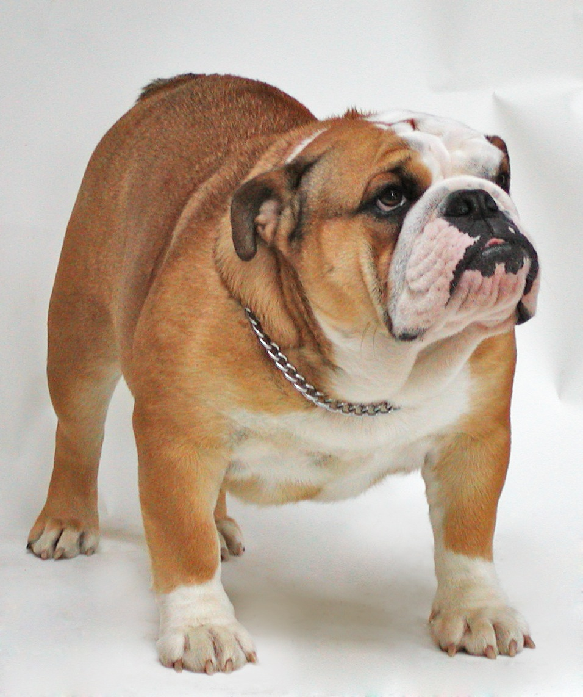

WELCOME TO THE DOG HOME
Chabahil,Kathmandu| Contact:01222222
POMERANIAN

The pomeranian is the breed of the dog of the spitz type that is named for the pomerania region in north-west poland and north-east germanyin central europe.The tiny is are much compact and affectionate.
LABRADORS

The Labrador Retriever or just labrador is a type of retriever-gun dog. The Labrador is one of the most popular breeds in all across the globe. They are friendly,outgoing and high spirited breed.
JAPANESE SPITZ
The japanese spitz is a small to medium breed of dog of the spitz type.The japanes spitz is a companion dog and pet.It is a loyal,energetic and affectionate companion that is highly intelligent and good with children.
G.SHEPHERD
The German Shepherd is a breed of a medium to large sized working dog that originated in germany.They are protective and are suited to many types of homes because tey are so intelligent and adaptable.
AKITA
The Akita is a large breed of dog originating from the mountainous regions of japan as a large and powerful dog with a noble and intimidating presence originally used for guarding royality and nobility.
ST.BERNARD
The st.bernard is a breed of very large working dog from the western alps. Originally the st.bernard dog breed was used to guard the ground's of switzerland's hospise st.bernard which later made it famous.
BULLDOG
The Bulldog, also known as the British Bulldog or English Bulldog, is a medium-sized breed of dog. It is a muscular, hefty dog with a wrinkled face and a distinctive pushed-in nose which makes them distinct.
DOODLE
A Doodle is a cross between a Poodle and another dog breed. (There are also Oodles and Poos, such as Schnoodles, Yorkiepoos, and Cockapoos.) The original Doodle was a Labradoodle.
PUG
The pug is a breed of dog with physically distinctive features of a wrinkly, short-muzzled face, and curled tail. The breed has a fine, glossy coat that comes in a variety of colours, most often fawn or black.
ROTTWEILER
The Rottweiler is one of the oldest of herding breed that has a history possibly dating back to the Roman Empire,the Rottweiler may be a descendant of ancient Roman drover dogs; a mastiff-type dog that was a dependable.
GOLDEN RETRIEVER

Golden Retriever is a large-sized gun dog that retrieve shot waterfowl during hunting and shooting parties. They were named 'retriever' because of their ability to retrieve shot game undamaged.
SIBERIAN HUSKY
The Siberian Husky is a medium size working dog breed that originated in Northeast Asia. The breed belongs to the Spitz genetic family. With proper training, they make great sled dogs.